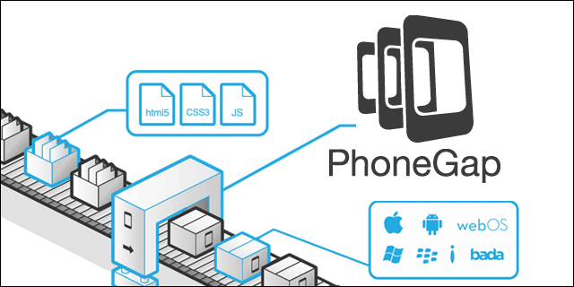
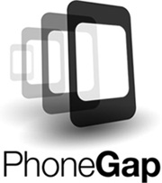
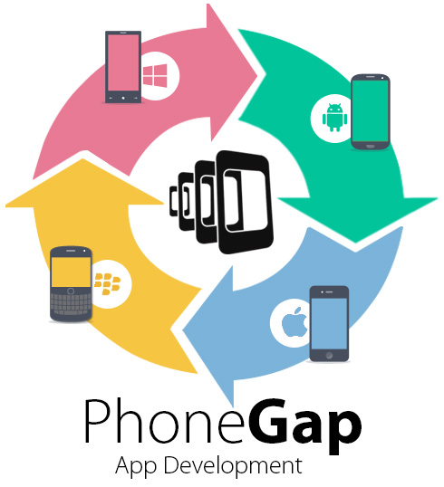

Historia

Inicialmente, fue desarrollado por Nitobi bajo licencias de software libre, pero para Octubre de 2011 Adobe anunció oficialmente la adquisición de Nitobi, pasando, así PhoneGap al control del gigante del software, gran interesado en la evolución de HTML5. Esto generó una gran incertidumbre entre los desarrolladores, pues el framework podía pasar a ser una tecnología propietaria, pero en una genial estrategia, Adobe donó PhoneGap a la fundación Apache, conservando de esta forma la integridad libre de PhoneGap.
En la actualidad, el proyecto en el sitio web de la fundación Apache esta nombrado como: "Apache Cordova", pero PhoneGap sigue siendo una especie de marca comercial, por lo que aún se sigue usando ese nombre para identificar al popular framework- Puedes encontrar más información de PhoneGap en la siguiente dirección www.phonegap.com, donde podrás descargar la última versión del framework que al escribir este artículo es la 1.7.0.
Caride - Mayo 2016
¿Que es PhoneGap?

PhoneGap es un paquete de librerías que permite empaquetar aplicaciones HTML5 de manera que puedan ser usadas como apps para móviles o Web Apps.
PhoneGap es una solución de Adobe que nos permite llevar el desarrollo para la web al mundo de los dispositivos. Se basa en una “envoltura” que nos permite ejecutar aplicaciones desarrolladas con HTML, CSS y Javascript como si fueran aplicaciones nativas para los teléfonos móviles o tablets.
Caride - Mayo 2016
Caracteristicas

Ventajas
Facilidad:Si conocemos lenguajes Web (especialmente JavaScript), desarrollar una aplicación con PhoneGap nos resultará mucho más fácil que hacerlo a través de los SDKs asociados a cada plataforma.
Velocidad de desarrollo. Con PhoneGap, codificamos la aplicación una sola vez y la adaptamos a múltiples plataformas, en vez de escribir una aplicación diferente para cada una.
Aplicación nativa. Nuestra aplicación tendrá todas las ventajas de las aplicaciones nativas.
Libre y gratuito. PhoneGap es open source y se puede utilizar sin costo para una primera aplicación.
Extensible. Existen muchos plugins para extender las funcionalidades de PhoneGap y acceder a características adicionales del dispositivo.
Desventajas.
Malas prácticas. Muchos desarrolladores web se acostumbran a crear aplicaciones nativas con PhoneGap, sin preocuparse por aprender a utilizar el lenguaje propio de cada plataforma. Así, no están en condiciones de desarrollar aplicaciones puramente nativas cuando realmente es la mejor opción.
Mal rendimiento. Muchos desarrolladores de PhoneGap descubren que sus aplicaciones tardan demasiado en cargar. Esto puede deberse a la pesada estructura del framework y la necesidad de usar JavaScript para implementar efectos visuales complejos. Las imágenes también influyen considerablemente. Por eso, puede no ser una buena opción para desarrollar videojuegos.
Limitaciones. PhoneGap no permite manipular las características del dispositivo con tanta libertad como el SDK correspondiente. Esto puede ser un problema si la aplicación a desarrollar tiene una alta complejidad.
Inconsistencias. Cada sistema operativo tiene su propio diseño. Y una aplicación nativa debería integrarse visualmente con el sistema operativo donde se ejecuta. Pero esto es muy difícil cuando la interfaz es la misma para todas las plataformas.
Caride - Mayo 2016